오늘의 arXiv Top 15
2026-11-16 (월) · cs.CV / cs.LG / cs.RO / cs.CL / cs.AI New submissions 전수 평가
306
신규 논문
72
cs.CV
78
cs.LG
37
cs.RO
37
cs.CL
82
cs.AI
15
정밀 리뷰
분야별 필터
전체 15개 논문 표시 중
1
84점
Training Reasoning Models in Simulation to Natively Use Real Robots
Embodied AI
relevance 8/10
Robotics (cs.RO)
open-weight reasoning model(Qwen3.8-27B)이 카메라 영상을 보고 chain of thought로 추론한 뒤 end-effector pose를 직접 내도록, demonstration 없이 시뮬레이션 RL만으로 학습함. 학습에 쓰지 않은 실제 dual-arm 로봇에서 30회 중 18회 성공했고, 학습 전 모델은 한 번도 성공하지 못함.
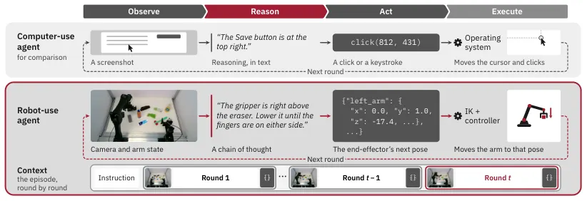
무슨 문제인가
robot-use agent(RUA)는 computer-use agent처럼 VLM이 카메라 영상을 보고 추론해 로봇의 다음 pose를 직접 내는 방식임. 이 방식은 GPT-6 Astra 같은 proprietary frontier model에서만 잘 됐고, open-weight model은 같은 benchmark에서 쉬운 과제도 자주 실패함. 그래서 기존 연구는 SAM 3 같은 perception tool, skill library, motion primitive를 붙인 harness로 open-weight model을 보조함. harness는 action space를 좁혀 일부 과제를 아예 못 하게 만들 수 있음. demonstration으로 fine-tuning한 VLA는 학습한 과제에서 목표만 바뀌어도 잘 따르지 못함.
어떻게 푸나
RURL(robot-use reinforcement learning)은 reasoning model 자체를 policy로 두고 시뮬레이션 로봇 과제에서 RL로 학습하는 방식임. 매 round마다 모델은 카메라 영상과 팔의 상태(JSON)를 받고, chain of thought로 추론한 뒤, 각 팔의 위치·자세 변화량을 JSON으로 출력함. 이 pose는 로봇 쪽의 inverse kinematics와 controller가 실행하고, 이전 round와 지시문은 모두 context에 남음. perception tool, planner, skill library는 주지 않으므로 물체 위치 파악과 실패 인지도 모델이 직접 해야 함. pose 수준의 interface라서 로봇이 바뀌어도 prompt의 로봇 설명만 바꾸면 됨. reward는 episode가 끝날 때 시뮬레이터가 성공으로 판정하면 1, 아니면 0이고, GRPO(같은 과제의 rollout 묶음 평균 대비 reward로 advantage를 매기는 RL)의 advantage를 추론 token과 action token 모두에 줌. 학습 인프라 PEAR(Post-training Engine for Agentic Robotics)는 rollout과 update를 비동기로 돌리고 prefix KV cache를 CPU로 내려 긴 multi-turn episode를 처리함. base model은 처음에 거의 성공하지 못하므로 성공이 조금이라도 나는 과제부터 학습하는 curriculum을 씀. 순서는 (LIBERO(시뮬레이션 단일 팔 조작 benchmark) suite 3개, LIBERO-Long을 더한 suite 4개, RoboDojo(시뮬레이션 양팔 조작 benchmark) 과제 2개임.
결과
- 실제 dual-arm YAM 로봇(학습에 한 번도 쓰지 않은 로봇, real-robot data 없음)에서 물체 집기 20회와 블록 정렬 10회를 시행함. 성공 횟수가 base model 0/30, LIBERO만 학습한 모델 7/30, LIBERO와 RoboDojo로 학습한 최종 모델 18/30임.
- LIBERO(시뮬레이션 단일 팔 조작 과제 40개, 2,000 episode) 성공률이 base model의 1.6%에서 74.4%로 오름. 같은 protocol에서 GPT-6 Astra는 medium effort 49.3%, max effort 80.6%임.
- LIBERO-Pro(LIBERO 과제를 바꾼 benchmark)에서 같은 장면에 다른 과제를 지시하면 demonstration으로 학습한 π0.5는 0.75%, 이 모델은 57.4%임. LIBERO 원래 과제에서는 π0.5가 96.9%로 이 모델의 74.4%보다 높음. π0.5 수치는 저자가 직접 돌린 값이 아니라 기존 논문 값임.
- LIBERO-Long(긴 과제 suite)을 curriculum에 넣기 전 단계의 모델에서 이 suite 성공률이 0.4%에서 39.0%로 오름. 일반 benchmark 9개(AIME, GPQA, MMMU 등)의 평균 변화는 -0.15점이고, 모두 paired 95% 구간이 0을 포함함.
한계
학습은 시뮬레이터 2개와 적은 과제(LIBERO, RoboDojo 과제 2개)에 그치고, 실로봇 평가도 학습한 과제와 같은 종류 2개에 30회뿐임. round마다 긴 추론을 해서 GB300 1장에서도 한 round에 평균 약 4.3초가 걸리고, 어려운 과제는 prompt에 로봇과 과제를 자세히 적어야 성공함. 추론이 일반화의 원인이라는 주장은 π0.5와 구조·학습법이 모두 다른 비교에서 나온 것이고, 추론만 떼어 본 ablation은 없음. 전체 RoboDojo 54개 과제 설정에서는 성공률 5.50%에 그치고, episode의 68.5%가 256k context를 다 써서 실패함.
누리랩 연구와의 연결
- VLA를 demonstration으로 fine-tuning하는 대신, reasoning VLM을 시뮬레이션 RL로 직접 policy로 만드는 대안임. 지시가 바뀌어도 따르는 정도를 π0.5와 비교한 LIBERO-Pro 결과는 generalist robot policy 연구의 비교 대상으로 쓸 수 있음.
- 모델이 매 round 이전 관측과 추론을 context에 쌓고 실패한 이동을 스스로 알아채야 하는 구조라서, failure detection·recovery와 context 기반 robot memory 연구의 실험 틀로 쓸 수 있음. 논문 Table 7에 실패 원인별 집계도 실려 있음.
2
74점
Joint World Action Models through Differentiable Trajectory Optimization
World Model
relevance 9/10
ICLR 2027 투고
Machine Learning (cs.LG)
행동과 미래 상태를 함께 생성하는 joint world action model을, 생성 궤적을 기준점으로 푼 trajectory optimization의 해를 미분해 얻은 gradient로 학습함. 시각 기반 제어 환경 7개의 평균 성공률이 imitation만 한 모델의 79.9%에서 91.7%로 오름.
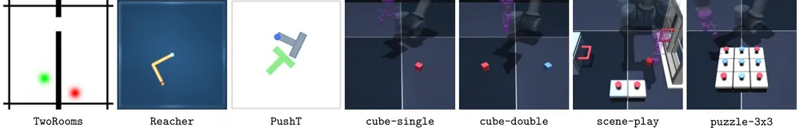
무슨 문제인가
joint world action model(WAM)은 앞으로 할 행동과 그 결과로 도달할 미래 상태를 함께 생성하는 모델임. 이 모델을 offline 데이터의 궤적을 따라 하도록만 학습하면, 생성한 행동이 목표에 닿는다는 보장이 없음. 생성한 미래 상태도 그 행동을 실제 dynamics로 굴렸을 때의 결과와 맞는다는 보장이 없음. 기존 대안인 world model rollout으로 행동만 학습하는 방법, 상태 일치 regularization, 최적화 결과 distillation은 생성한 미래 상태를 제어에 쓰지 않거나 최적화 해를 고정된 정답으로만 씀.
어떻게 푸나
WATO(World Action Trajectory Optimization)는 먼저 행동과 latent 상태 궤적을 함께 만드는 flow matching 생성 모델을 offline 데이터로 imitation 학습함. 이 모델을 joint WAF(joint world action flow)라 부르며, 앞의 WAM을 flow matching으로 만든 것임. 입력은 현재 관측의 latent와 목표 관측의 latent이고, 출력은 행동 궤적과 미래 latent 궤적임. 다음으로 생성한 행동과 상태를 기준점(reference)으로 삼는 trajectory optimization 문제를 풂. 목적 함수는 목표까지의 latent 거리, 생성 행동과의 거리, 생성 상태와의 거리의 합이고, 상태는 고정된 사전학습 world model(LeWM)의 rollout으로 정해짐. 이 최적화 해에서 잰 목표 거리를 implicit differentiation으로 미분해 생성 모델에 gradient를 줌. 그래서 행동 기준점과 상태 기준점이 모두 task gradient를 받음. 배포할 때는 최적화를 빼고, 후보 궤적 K개를 생성해 world model로 굴려 목표에 가장 가까운 것을 골라 receding horizon으로 실행함.
결과
- 평가 환경은 TwoRooms(시각 navigation), Reacher, PushT(물체 밀기), OGBench 시각 조작 과제 4개(cube-single, cube-double, scene-play, puzzle-3x3)임. 7개 환경 평균 성공률이 imitation만 한 joint WAF의 79.9%에서 91.7%로 오름. 같은 world model로 매번 온라인 최적화하는 gradient-based MPC는 76.7%, CEM(cross-entropy method: 행동 후보를 뽑고 좋은 것 주변으로 다시 뽑는 탐색)은 65.0%임. offline goal-conditioned RL 방법 중 가장 높은 GCBC(goal-conditioned behavior cloning)는 66.4%임. 4 seed, seed당 100회 평가임.
- 학습 목표만 바꾼 비교에서 world model rollout으로 행동만 학습하면 85.7%, 상태 일치 항을 더하면 87.4%, 최적화 해를 고정 정답으로 distillation하면 88.0%임. 최적화 해를 통해 미분하는 WATO는 91.7%임. 상태 기준점을 빼면 85.7%, 행동 기준점을 빼면 85.0%로 내림.
- 배포 후 같은 trajectory optimization을 더 붙였을 때 오르는 성공률이 학습 전에는 평균 10.4퍼센트포인트, WATO 학습 후에는 1.3퍼센트포인트임. CEM 대비 계획 한 단계 latency는 기하평균 11.5배 짧고, world model 평가 횟수는 600.5배 적음.
한계
모든 실험이 시뮬레이션이며 실로봇 결과는 없음. 주 실험은 25 step 앞의 목표에 도달하는 짧은 goal-conditioned 설정이고, 목표 거리를 100 step으로 늘리면 성공률이 48~58%로 내림. 방법이 사전학습 world model의 정확도에 기대며, 생성 모델이 world model 오차를 이용할 가능성은 저자도 열린 문제로 둠.
누리랩 연구와의 연결
- 학습 때만 world model 기반 trajectory optimization을 쓰고 배포 때는 생성과 후보 선택만 하는 구조임. VLA나 world action model의 test-time optimization 비용을 학습 쪽으로 옮기는 설계의 비교 대상으로 쓸 수 있음.
- 생성한 미래 상태와 world model 예측의 차이가 최적화 기준점으로 쓰이므로, 두 예측의 불일치를 failure detection 신호로 쓰는 연구로 이어 볼 수 있음.
3
74점
V-JEPA-LM: Video-Language Models That Read Dynamics Beyond Static, Text-Aligned Representations
Video
relevance 6/10
Computer Vision and Pattern Recognition (cs.CV)
V-JEPA 같은 world model 영상 encoder가 이미 가진 움직임 정보를 언어 모델이 실제로 쓰도록, 같은 영상을 뒤집거나 속도를 바꿔 답이 갈리게 만든 질문(counterfactual supervision)을 섞어 학습함. 4B 모델이 11개 영상 benchmark 평균 72.1점으로 공개 4B 최고 모델의 61.1점보다 높음.
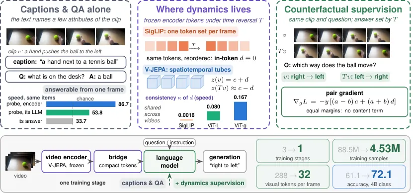
무슨 문제인가
V-JEPA 같은 predictive video encoder는 caption 없이 영상만으로 방향, 속도, 순서, 상태 변화를 배움. 그런데 이 encoder를 언어 모델에 붙일 때는 caption과 질의응답 데이터로 학습하고, 이런 문항은 대부분 한 frame만 봐도 답할 수 있음. 그래서 언어 모델은 영상의 변화를 읽지 않고 질문이 묻는 속성만 찾도록 배움. 저자들의 측정에서 속도 비율 문항을 frozen V-JEPA feature에 linear probe로 풀면 86.7%가 나오지만, 같은 encoder로 만든 VLM의 답은 33.7%로 chance(33.3%) 수준임.
어떻게 푸나
먼저 영상 v와 변환된 영상 Tv(역재생, 좌우 반전, 속도 변경)의 token을 같은 위치로 맞춘 뒤, 평균을 content 성분, 차이의 절반을 change 성분으로 나눠 측정함. frame마다 따로 token을 만드는 SigLIP은 역재생 때 token 순서만 바뀌어 change 성분이 0이고, V-JEPA는 영상이 달라도 같은 방향을 가리키는 change 성분을 가짐. 이 성분을 언어 모델이 읽도록, 같은 영상과 같은 질문에 대해 변환이 답을 정하는 문항을 자동으로 만들어, 두 영상이 공유하는 content로는 답을 가를 수 없게 함. 질문 유형 6종에 걸친 생성 규칙 14개를 공개 영상 출처 33곳의 영상에 pixel 변환으로 적용해 문항을 만들고, 새 사람 annotation이나 언어 모델은 쓰지 않음. 모델은 frozen V-JEPA 2.1이 32 frame을 읽고, bridge(고정 PCA 회전과 학습되는 MLP)가 clip당 1,024 token으로 줄여 Qwen3 또는 Llama 언어 모델(1B~8B)에 넣음. 학습은 기존 caption·QA 데이터에 counterfactual 행을 약 6% 섞은 4.53M 샘플로 한 단계만 함.
결과
- 11개 benchmark의 12개 점수 평균을 비교함(MVBench, TOMATO, Vinoground 등 시간·움직임 이해 문항 포함). 모든 모델은 저자가 32 frame 같은 protocol로 평가함. 이 평균에서 Qwen3 4B 언어 모델을 쓴 이 방법(Ours-4B-Q)의 점수는 72.14점임. 공개 4B 최고 Molmo2-4B는 61.08점, 공개 8B 최고 PLM-8B는 64.79점임. 학습 샘플 수는 공개 모델보다 2~38배 적음.
- 2B 통제 실험(같은 데이터·schedule)에서 V-JEPA에 counterfactual 행을 넣으면 12개 점수 평균이 61.53점에서 66.02점으로 오름. 같은 비중을 arrow-of-time 질문으로 채우면 61.17점으로 오르지 않음. 학습 8k step 시점에 기존 benchmark 속 속도 문항 정확도가 32.4%에서 65.3%로 오름.
- 학습에 없던 속도 비율(1.6, 2.5, 4.0) 문항에서 Ours-2B-Q는 98.7%, Qwen3-VL-8B는 36.7%, counterfactual 행 없이 학습한 V-JEPA 2B는 33.3%임(chance 33.3%). 문항 문구와 보기는 학습 생성기와 같고 속도 비율만 새로움.
- Meta의 V-JEPA 2 video LLM과 둘 다 보고한 6개 benchmark 평균을 비교하면 Ours-8B-Q가 70.0점, V-JEPA 2가 63.3점임. Meta 쪽은 88.5M 샘플을 썼고 모델이 공개되지 않아 논문 수치를 인용함.
한계
평가는 32 frame 짧은 clip의 영상 질의응답 benchmark뿐이고, 로봇 과제나 action 출력은 다루지 않음. NExT-QA, PerceptionTest처럼 지식이 많이 필요한 benchmark에서는 더 많은 데이터로 학습한 공개 모델이 앞서고, 이미지 QA·OCR·긴 영상은 범위 밖임. 현재 가중치와 inference 코드만 공개됐고, 학습 코드와 데이터 생성기는 추후 공개 예정임.
누리랩 연구와의 연결
- V-JEPA 2 같은 world model encoder 위에 언어 모델을 얹는 VLA에서, encoder의 dynamics가 언어 판단까지 전달되지 않는 문제를 측정하고 고치는 방법임. 역재생·중단 clip·불가능한 물리 같은 construction은 failure detection용 학습 데이터(동작 미완료, 잘못된 방향)를 annotation 없이 만드는 데 그대로 쓸 수 있음.
- 같은 장면의 짝 문항에서 답이 변환으로만 갈리게 하는 설계와 encoder feature에서 속도 정보를 담은 방향을 지우는 실험은 counterfactual reasoning 관점에서 VLA가 실제로 동역학을 쓰는지 진단하는 도구가 됨.
4
72점
Agentic-Teacher: An Agentic Data Engine for Failure-Driven VLA Post-Training
VLA
relevance 9/10
ICLR 양식 (추정)
Robotics (cs.RO)
coding agent가 VLA의 실패 rollout을 진단하고 실패 지점부터 과제를 끝내는 code policy를 직접 짜서, 그 실행 궤적을 VLA post-training 데이터로 바꿈. LIBERO-10에서 π0의 평균 성공률을 79.4%에서 87.8%로 올림.
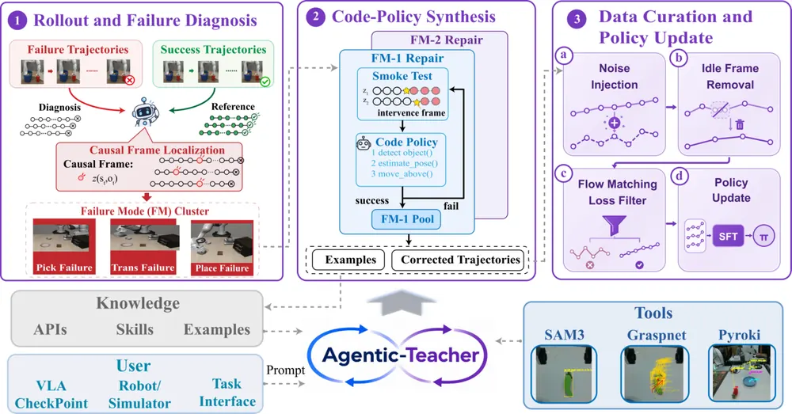
무슨 문제인가
VLA는 실행 중 제어 오차가 쌓이면 학습 분포 밖 상태에 들어가 과제에 실패함. DAgger처럼 policy가 실제로 간 상태에서 정답 행동을 받아 다시 학습하면 이를 줄일 수 있지만, 그 정답을 사람이 매번 지켜보며 넣어야 해서 과제 수를 늘리기 어려움. coding agent로 사람을 대신하는 연구가 나오고 있지만, code policy가 과제에 성공한 궤적이 VLA 학습에 그대로 좋은 데이터가 되는 것은 아님. 프로그램이 만든 궤적은 지나치게 매끈하고 반복적이며, 멈춰 있는 프레임이 많고, base VLA의 행동 분포와 거리가 있음.
어떻게 푸나
Agentic-Teacher는 VLA checkpoint, 과제 설명, 인식·제어 도구(SAM3, Contact-GraspNet, PyRoki)를 받아 세 단계로 학습 데이터를 만듦. 첫 단계에서 agent는 실패 rollout을 성공 rollout과 비교해 실패 원인이 된 시점(causal frame)을 찾고, 비슷한 원인의 실패를 failure mode(집기 실패, 옮기기 실패, 놓기 실패 등)로 묶음. 둘째 단계에서 agent는 failure mode마다 causal frame 상태에서 출발해 남은 과제를 끝내는 closed-loop code policy를 짬. 대표 실패 하나에서 먼저 실행해 보고, 성공하면 같은 failure mode의 다른 시작 상태로 넓히고, 실패하면 실행 영상과 action 기록을 보고 프로그램을 고침. 성공한 프로그램은 skill library에 쌓여 다음 수리에 다시 쓰임. 셋째 단계에서 성공한 프로그램을 시간 상관이 있는 action noise를 넣어 다시 실행하고, 움직임이 없는 프레임을 지우되 gripper 상태가 바뀌는 프레임은 남김. 그다음 고정된 base VLA의 flow-matching loss가 비정상적으로 높은 궤적을 버리고, 남은 궤적과 원래 성공 rollout을 합쳐 VLA를 fine-tuning함. 학습된 VLA는 agent나 code policy 없이 단독으로 평가됨.
결과
- 과제당 50회 평가의 평균 성공률이 LIBERO-10(시뮬레이션 장기 조작 과제 10개)에서 79.4%에서 87.8%로, MetaWorld-10(시뮬레이션 로봇 팔 조작 과제 10개)에서 80.4%에서 90.6%로 오름. 성공 rollout만 모아 다시 학습하는 RFT(Rejected Fine Tune)는 각각 81.4%와 85.2%임.
- base π0가 한 번도 성공하지 못한 RoboCasa(시뮬레이션 주방 과제) 3개에서 평균 성공률이 0%에서 30.0%로 오름. 성공 궤적이 없어서 RFT는 적용할 수 없음. 과제당 400회 시도 안에서 성공 궤적을 평균 139개 모았고, PPO는 0개였음.
- 데이터 처리 단계를 하나씩 더한 LIBERO ablation(학습 4,000 step 시점)에서 code policy 원본 궤적으로만 학습하면 성공률이 0.0%임. noise를 넣으면 81.0%, 멈춘 프레임을 지우면 89.0%, flow-matching loss 필터를 더하면 95.0%로 오름. 마지막 필터는 궤적 수를 120개에서 110개로 줄이면서 성공률을 올림.
한계
실로봇 실험이 없고, 저자도 causal frame까지 실패 궤적을 다시 재현하는 비용이 실제 로봇에서는 큰 문제라고 밝힘. coding agent 한 종류(GPT-5.6 Sol)만 썼고, 수리에 든 시간·API 비용을 다른 데이터 수집 방법과 같은 조건에서 비교하지 않음. 과제별로 보면 LIBERO-10의 mug-microwave가 78%에서 56%로, book-caddy가 96%에서 88%로 내려가 개선이 고르지 않음.
누리랩 연구와의 연결
- VLA의 실패를 진단하고 실패 시점부터 수리 데모를 만들어 다시 학습하는 흐름이라 failure detection·recovery와 VLA post-training 연구에 바로 비교 대상이 됨.
- base VLA의 flow-matching loss로 학습 데이터를 거르는 방식은 우리가 쓰는 flow 기반 VLA의 데이터 선별이나 실패 예측 점수로 따로 시험해 볼 수 있음.
5
70점
Racing the Clock: Teaching VLNs Budget-Conditioned Object Search
Navigation
relevance 7/10
ICRA·IROS·RA-L 계열 양식 (추정)
Robotics (cs.RO)
남은 행동 횟수(budget)를 지시문으로 받아 목표 물체를 최대한 많이 찾는 VLN을, 정답 위치를 아는 expert 대신 방 단위로 불확실성 속에서 탐색하는 expert로 가르침. HM3D(실제 집을 3D 스캔한 실내 시뮬레이션 장면 모음)의 처음 보는 장면에서 2000 step 기준 찾은 물체 비율이 72.7%로, 정답 위치를 아는 expert로 가르친 VLN의 65.5%보다 높음.
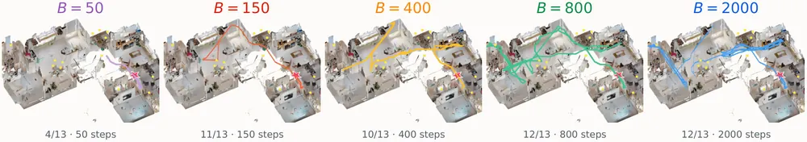
무슨 문제인가
VLN은 보통 정해진 episode 길이 안에서 물체 하나를 찾으면 성공으로 치고, policy는 남은 시간을 입력으로 받지 않음. 그런데 남은 budget이 짧으면 눈앞의 물체를 모으고 길면 먼 방을 탐색하는 것이 맞으므로, 같은 관측에서도 최적 행동이 budget에 따라 달라짐. 이런 행동을 imitation learning으로 가르치려면 expert가 필요함. 지도와 물체 위치를 모두 아는 expert는 경로는 잘 짜지만, 학생 VLN이 볼 수 없는 정보에 기대어 행동하므로 학생이 따라 하기 어려울 수 있음.
어떻게 푸나
저자는 budget-conditioned object search를 정의함. 입력은 RGB 영상 이력, 목표 범주, 남은 step 수를 적은 문장이고, 출력은 전진·좌회전·우회전·정지 같은 primitive action임. 물체는 카메라 시야각 안에서 1.5m 이내에 들어오면 찾은 것으로 셈. expert는 환경을 어떤 수준으로 추상화하느냐만 다르고, 남은 budget을 인자로 둔 같은 Bellman recursion으로 행동을 고름. object-level expert는 모든 목표 물체 위치를 알고 budget 안에서 최대한 많이 도는 경로를 짬. room-level expert는 들어가 본 방과 문 너머로 보이는 물체만 알고, 안 들어간 방의 내용물은 모름. 대신 다른 장면 181개에서 모은 방 이동 기록으로 각 방에 들어갔을 때 찾을 물체 수의 기대값과 이동 비용을 추정해 다음 방을 고름. 두 expert의 시연을 같은 장면·budget·기록 수로 Uni-NaVid(영상 기반 VLN)에 fine-tuning하고, 남은 budget은 문장으로만 넣음.
결과
- expert 자체 성능은 위치를 아는 object-level expert가 높음. 150 step에서 찾은 물체 비율이 91.3%로 room-level expert의 45.7%보다 높음.
- 학습된 VLN에서는 순위가 바뀜. HM3D 검증 장면 10개, 100 episode에서 2000 step 기준으로 비교함. room-level 지도 VLN이 72.7%, 가장 가까운 미탐색 경계(frontier)로 가는 greedy frontier 탐색으로 지도한 VLN이 68.5%, object-level 지도 VLN이 65.5%, 사전학습 VLN이 44.8%임. 150·400·800 step에서도 room-level 지도가 가장 높음.
- 학습 때 남은 step 문장을 빼도 room-level 지도가 object-level 지도보다 400 step에서 9.4퍼센트포인트, 2000 step에서 1.7퍼센트포인트 높음. 문장을 넣으면 room-level 지도 VLN이 2000 step에서 9.2퍼센트포인트 더 오름.
- Unitree Go2 사족 로봇으로 의자 14개가 있는 실제 집에서 추가 학습 없이 budget마다 5회씩 돌림. 찾은 의자 수 평균이 50 step 3.4개에서 2000 step 9.2개로 늘고, budget이 크면 먼 방으로 먼저 감.
한계
2000 step에서도 학생 VLN은 room-level expert보다 크게 낮음(72.7% 대 98.0%). 800 step 이상에서는 전진 행동의 92~93%가 지나간 칸을 다시 밟고, 지도를 직접 쓰는 greedy frontier 탐색 자체보다 낮음. 두 expert는 정보 접근뿐 아니라 결정 단위(물체 대 방)와 실행 방식도 달라, 차이의 원인을 정보 차이로 가를 수 없다고 저자도 밝힘. room-level expert는 방 종류와 물체를 시뮬레이터 정답 annotation에서 읽고, 실로봇 실험은 집 하나에서 의자 찾기뿐임.
누리랩 연구와의 연결
- expert가 아는 정보와 학생이 볼 수 있는 정보가 다르면 성능이 높은 expert가 더 나쁜 시연을 줄 수 있다는 결과임. privileged expert로 VLA 시연을 만드는 연구에서 expert 설계 기준으로 쓸 수 있음.
- 남은 budget을 policy 입력으로 넣어 탐색 전략을 바꾸는 설정은 active perception과 test-time 자원 배분 연구에서 비교 대상으로 쓸 수 있음.
6
68점
PROOF: Perceptive Robustness via Out-of-Distribution Fallback for Legged Locomotion
Locomotion
relevance 9/10
CoRL 2026 채택
Robotics (cs.RO)
depth 카메라 입력이 가려지거나 망가지면 시각 정보를 끊고 고유감각(proprioception)만으로 걷도록 사족보행 policy를 학습함. 시뮬레이션에서 강한 시각 손상을 넣었을 때 지형별 통과 성공률이 95~100%로 유지됨.
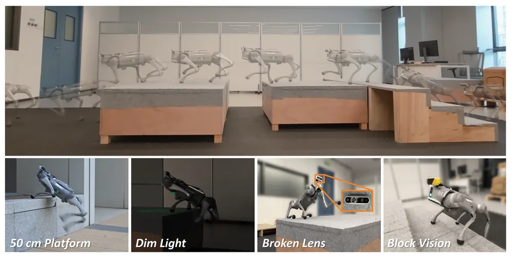
무슨 문제인가
depth 카메라를 쓰는 perceptive locomotion은 틈새 점프나 높은 단 오르기 같은 parkour 동작을 가능하게 했지만, 시각 입력이 망가지면 policy가 잘못된 지형 정보를 그대로 믿고 넘어짐. 가림, 강한 조명, 반사면 같은 상황은 실제 환경에서 흔함. 기존의 domain randomization이나 sensor dropout은 시각 입력이 적어도 일부는 쓸모 있다고 가정함. 시각 입력이 아예 쓸모없어진 상황에서 시각을 언제 끊고 어떻게 걸을지는 따로 학습되지 않았음.
어떻게 푸나
PROOF(Perceptive Robustness via Out-of-Distribution Fallback)는 teacher-student 두 단계로 학습함. teacher는 시뮬레이션의 elevation map(로봇 주변 지형 높이 격자)과 고유감각 이력을 입력으로 받아 PPO로 학습함. 이때 평지·경사·계단 지형에서 확률 0.4로 지형 latent를 0으로 가려서, 같은 teacher가 지형을 보고 걷는 행동과 고유감각만으로 걷는 행동을 함께 배움. student는 depth 이미지 두 장을 CNN과 GRU로 처리해 teacher의 지형 latent를 평균과 log-variance로 예측하고, negative log-likelihood로 학습함. 학습 중 depth에 가림·잡음·사각형 artifact를 넣고, 그 구간에는 teacher도 지형을 가린 행동을 정답으로 줌. 별도의 gate head는 시각 입력이 정상일 확률을 냄. 이 값이 0.8 이상이 되면 지형 latent를 켜고 0.5 미만이 되면 끄는 hysteresis를 씀. 그래서 actor는 지형 latent를 온전히 받거나 0으로 받음. 출력은 Unitree Go2의 12개 관절 목표 위치임.
결과
- 시뮬레이션의 비parkour 지형(중간 난이도, 지형당 100 episode)에 학습 때보다 강한 시각 손상을 넣음. PROOF의 지형별 통과 성공률은 95~100%임. teacher에 지형 가림 학습이 없는 Baseline 1은 모든 지형에서 0%임.
- 지형 가림 학습은 같고 불확실성 예측과 gate만 뺀 Baseline 2는 73~96%임. Baseline 1(0%)까지 함께 보면 PROOF와의 차이 대부분은 gate가 아니라 teacher 가림 학습에서 나옴.
- gate를 손상 검출기로 평가하면 학습 때 본 손상 유형에서 recall 0.969, 처음 보는 줄무늬·타원 반사 손상에서 recall 0.760임. 깨끗한 시각으로 parkour할 때 gate가 시각을 잘못 끄는 비율은 0.004임.
- 실제 Go2에서 손상 6종(손 가림, 손전등, 흔들리는 거울, 움직임 번짐, depth 누락, depth 잡음)을 평지와 계단, 속도 3가지에서 각 5회 시험함. 가장 낮은 성공률은 계단에서 움직임 번짐을 넣은 경우로, 0.5 m/s에서 3/5, 1.0 m/s에서 2/5임. 손전등과 거울은 계단의 한 속도에서 4/5이고 나머지 조건은 모두 5/5임.
한계
손상 시험은 지형을 보지 않아도 걸을 수 있는 평지·경사·계단에서만 했고, 시각이 꼭 필요한 parkour 지형에서 시각이 망가지는 경우는 다루지 않음. 실제 parkour 실험(틈새, 높은 단)의 구체 성공률과 비교 대상 수치는 그림에만 있어 본문에서 확인 불가함. 학습용 손상 패턴을 사람이 정했고, 저자도 log-variance가 보정된 오차 추정치가 아니라고 밝힘.
누리랩 연구와의 연결
- 입력 신뢰도를 policy 안에서 추정해 실패 전에 안전한 행동으로 바꾸는 구조여서, failure detection과 recovery 연구에서 'teacher가 fallback 행동까지 가르치는' 설계의 비교 대상으로 쓸 수 있음.
- VLA나 조작 policy에서 카메라가 가려질 때 고유감각과 직전 상태만으로 안전하게 멈추거나 동작을 이어 가는 fallback을 학습하는 실험에, 같은 teacher 마스킹 방식을 옮겨 볼 수 있음.
7
68점
Imitation Policies Learn a Proprioceptive Anchor: A Predictive Law for Perception Noise and Its Closed Loop Cost
IL
relevance 9/10
Robotics (cs.RO)
노이즈 낀 물체 위치로 학습한 imitation policy가 그 값을 얼마나 덜 믿는지를, 로봇 자신의 상태가 물체 위치를 대신 알려 준다는 점(proprioceptive anchor)으로 예측하는 식을 세움. 새 noise 수준 10곳에서 이 정도의 평균 예측 오차가 고전 회귀 이론(EIV)의 0.37에서 0.025로 줄어듦.
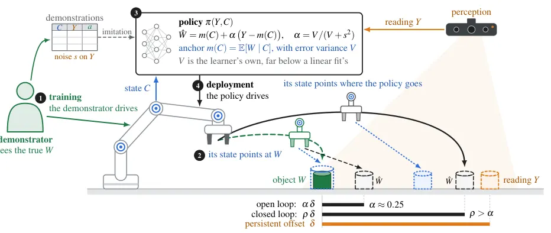
무슨 문제인가
조작 policy는 perception이 준 물체 위치를 입력으로 받는데, 이 값에는 오차가 있음. 흔한 대처는 학습 데이터에 noise를 넣어 policy가 읽은 값을 덜 믿게 만드는 것임. 그런데 학습된 policy가 읽은 값을 얼마나 덜 믿을지 학습 전에 예측하는 정량적 설명은 없었음. 가장 가까운 후보는 통계의 errors-in-variables(EIV)로, 입력에 측정 오차가 있을 때 회귀 계수가 줄어드는 정도를 주는 이론임. 여기서 sensitivity는 입력된 물체 위치가 바뀔 때 policy 출력이 따라 바뀌는 정도임. 이를 diffusion policy에 미리 적용해 보니, 12 mm noise에서 EIV는 원래 sensitivity의 86%가 남는다고 예측했으나 실제로는 23%만 남았음.
어떻게 푸나
demonstrator는 물체를 향해 로봇을 움직이므로, 로봇의 상태(end-effector 위치, gripper 열림 등)만 보아도 물체 위치를 어느 정도 알 수 있음. 저자는 policy가 로봇 상태 C로 추정한 실제 물체 위치 W의 기댓값 m(C)=E[W|C](anchor)와 노이즈 낀 읽은 값 Y를 신뢰도에 따라 섞는다고 봄. 이때 읽은 값에 대한 가중치는 α=V/(V+s²)이고, s²는 읽은 값의 noise 분산, V는 anchor의 오차 분산임. 고전 EIV도 같은 식이지만 V를 demonstration의 선형 모델에서 구하고, anchor law는 V를 학습된 policy에서 직접 잼. 구체적으로 한 noise 수준(약 12 mm)에서 학습한 policy의 Jacobian을 clean policy와 비교해 α를 재고, 거꾸로 V를 구한 뒤 다른 noise 수준의 α를 예측함. anchor와 'noise를 실제보다 크게 보는 학습기'를 가르기 위해, 깨끗한 입력에서의 bias를 비교하는 식도 따로 유도함. 모든 검정은 판정 규칙과 예측 수치를 데이터 전에 타임스탬프 파일로 등록(pre-registration)한 뒤 수행함.
결과
- robomimic Square(너트를 기둥에 끼우기)와 Can(캔 집어 옮기기), diffusion policy와 MLP 두 학습기, 새 noise 수준 4개에서 α 예측 10건을 미리 등록함. 평균 절대 오차는 anchor law 0.025, 고전 EIV 0.37이었고 허용 오차(0.10) 안에 든 것은 10건 대 0건임.
- Square에서 demonstration의 선형·nearest-neighbour 모델은 anchor 오차를 약 30 mm로 잡지만, diffusion policy는 약 6.5 mm인 것처럼 행동함. 깨끗한 입력에서 잰 bias는 -0.003~-0.052 범위로, noise를 크게 보는 설명이 예측하는 -0.37~-0.75와 차이가 큼.
- closed loop에서 ±10 mm의 지속적 위치 오프셋을 주면, 등록된 기준을 통과한 policy 15개 모두에서 closed-loop sensitivity가 α보다 컸음. 오프셋을 완전히 따라간다는 더 엄격한 예측은 15개 중 8개에서만 맞음.
- Can의 diffusion policy를 새 noise 수준 9mm와 18mm로 학습하고 rollout 전에 α로 성공률을 예측함. 측정 성공률 0.758과 0.375, 예측 0.760과 0.402로 차이가 0.03 안이었음. 단, 학습 noise 크기로 그린 곡선도 0.747과 0.397로 비슷하게 맞힘.
한계
모든 실험이 robosuite 시뮬레이션이고, noise는 저차원 상태의 물체 위치에 더한 인공 Gaussian noise임. 이미지 입력 policy와 실제 perception 오차에서 성립하는지는 검증하지 않았음. V는 데이터에서 유도되지 않고 학습된 policy마다 한 번 재야 하며, 성공률 예측에서는 α와 학습 noise 크기의 효과가 분리되지 않았음.
누리랩 연구와의 연결
- closed loop에서 policy가 perception 오프셋을 α보다 크게 따라간다는 결과는, manipulation policy의 failure detection과 원인 진단에서 확인할 실패 경로 하나로 쓸 수 있음.
- α로 rollout 전에 성공률을 예측한 시도는 학습 noise 크기와 효과가 분리되지 않았음. VLA나 diffusion policy의 배치 전 진단 지표 연구에서 조건을 붙인 비교 대상으로 쓸 수 있음.
8
68점
TouchTwin: Scaling Human Touch Data via Real-to-Sim-to-Real
Manipulation
relevance 9/10
CoRL 양식 (추정)
Robotics (cs.RO)
사람 손 시연을 시뮬레이션으로 다시 만들 때 영상 대신 촉각 장갑이 잰 접촉과 힘으로 손가락을 쥐게 해서, 시뮬레이션에 쥐는 힘까지 옮김. 이 replay로 학습한 hand policy는 기록된 힘의 0.99배로 쥐고, 손 자세만 따라 한 policy는 0.31배로 쥠.
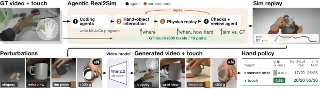
무슨 문제인가
사람 시연을 시뮬레이션에서 여러 번 다시 쓰는 real-to-sim-to-real 파이프라인은 손과 물체의 움직임을 영상에서만 복원함. 손 자세는 손가락이 물체 표면 어디에 멈췄는지만 보여 주고, 손가락을 얼마나 세게 오므렸는지는 보여 주지 않음. 그래서 어느 손가락이 언제 얼마나 세게 닿는지가 시뮬레이션에 들어가지 않음. 그래서 자세만 따라 하거나 영상만으로 physics replay를 만들면 쥐는 힘이 기록된 힘과 어긋남.
어떻게 푸나
TouchTwin은 촉각 장갑을 낀 사람 시연 기록 모음인 TouchScale 데이터셋의 기록 중 일부를 골라 MuJoCo 시뮬레이션으로 다시 만듦. 입력은 머리와 손목 RGB-D 카메라 영상과 taxel(촉각 센서 칸) 880개짜리 장갑의 촉각 기록임. 먼저 coding agent가 물체와 그 움직이는 부품까지 담은 MuJoCo 장면을 프로그램으로 짜고, 물리 검사를 통과할 때까지 고침. 다음으로 참가자마다 장갑 taxel을 피부에 붙인 손 모델을 맞추고, 두 카메라 영상으로 손 자세를 추적함. 기록된 촉각이 각 손가락의 접촉 시점과 힘 목표를 정해, 손가락을 보이는 자세보다 더 오므려 실제 힘을 내게 함. 출력은 접촉과 힘이 실린 replay이고, 시뮬레이션 접촉력을 장갑 기록과 비교해 검사함. 이 replay에서 쥐는 자세, 동작 속도, 힘 목표, 물체 무게와 마찰을 바꿔 다시 돌리면 접촉·힘 label이 붙은 성공과 실패 시연이 생김. 이를 Wan2.2 video model에 조건으로 넣어 새 시점과 장면의 영상으로도 만듦.
결과
- 머그잔 과제의 held-out 기록에서 hand policy(N0-VTLA: 시각·촉각·언어를 받아 행동을 내는 모델)를 학습 데이터만 바꿔 비교함. 기록 대비 쥐는 힘의 배율이 touch-grounded replay 0.99배, 영상 기반 replay 1.55배, 자세 모방 0.31배임. 성공 횟수는 각각 20/20, 15/20, 17/20임.
- 같은 policy를 시뮬레이션 perturbation 36개에서 시험함. 성공 횟수는 touch-grounded replay 35/36, 영상 기반 replay 33/36, 자세 모방 26/36임.
- held-out 사람 기록에서 접촉 여부를 맞히는 contact predictor를 학습함. 실제 접촉 frame을 놓친 비율이 영상 기반 replay로 학습하면 32.2%, touch-grounded replay로 학습하면 13.1%임. F1은 0.778에서 0.890으로 오름.
- 같은 첫 frame, prompt, seed로 영상을 생성해 실제 영상과 비교함. PSNR이 첫 frame과 text만 쓰면 15.36, depth 조건을 더하면 18.55, 시뮬레이션 조건을 더하면 18.89임.
한계
모든 policy는 시뮬레이션 asset 위에서 open-loop로만 시험했고 실로봇 실험은 없음. policy와 contact 실험은 머그잔 과제 하나뿐이고 held-out 세트도 작으며, held-out clip이 이미 접촉한 상태에서 시작해 접촉 시작 시점은 시험하지 않음. 양손 replay에서는 물체가 손 안에서 12~23mm 미끄러짐.
누리랩 연구와의 연결
- 한 기록에서 힘 목표나 마찰을 줄여 물체가 떨어질 때까지 돌리면 접촉·힘 label이 붙은 실패 시연이 생김. failure detection 학습 데이터와 grasp 여유 측정에 쓸 수 있음.
- 촉각을 받는 dexterous manipulation policy나 tactile VLA를 사람 시연으로 학습할 때, 영상만 쓰면 쥐는 힘이 어긋난다는 비교 근거가 됨.
9
66점
Learning Latent Goal Costs for Visual World-Model Planning with an Expanding Curriculum
World Model
relevance 8/10
ICRA·IROS·RA-L 계열 양식 (추정)
Robotics (cs.RO)
고정된 visual world model로 목표 이미지까지 계획할 때, 목표와의 latent 거리를 다시 매기는 작은 adapter를 계획 경험만으로 학습함. DotWall의 같은 조건 50개 사례에서 계획 성공률이 54%에서 98%로 오름.
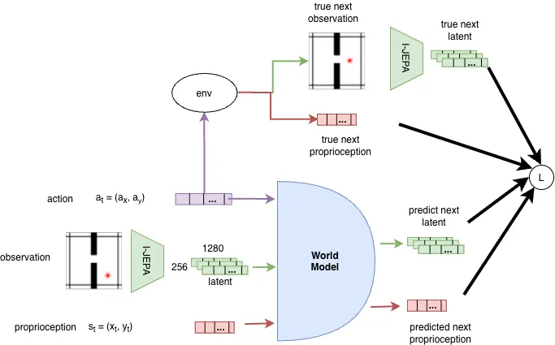
무슨 문제인가
DINO-WM처럼 pretrained visual encoder 위에 만든 world model은 예측한 latent와 목표 이미지 latent의 MSE로 행동 후보를 고름. 이 MSE는 목표 가까이에서는 쓸 만하지만, 멀리서는 실제로 가야 할 거리를 반영하지 못함. 예를 들어 벽 건너편에 있어 보기에는 목표와 비슷한 위치를 낮은 cost로 평가함. 그래서 문이나 장애물을 돌아가느라 처음에 cost가 오르는 행동은 계획 horizon 안에서 나쁜 행동으로 보이고, planner가 출발한 방에 머무름.
어떻게 푸나
I-JEPA encoder와 world model은 고정하고, goal cost 계산에만 쓰는 작은 residual MLP adapter를 patch embedding마다 적용함. adapter는 64차원 bottleneck을 가지며 identity로 초기화되므로 처음 planner는 원래 MSE planner와 같음. planner는 CEM(cross-entropy method: 행동 후보를 뽑고 좋은 것 주변으로 다시 뽑는 탐색)으로 행동열을 고르고 첫 행동만 실행한 뒤 다시 계획함. 학습 데이터는 목표 주변 좁은 정사각형 영역(band)에서 출발한 계획 궤적부터 모음. 성공한 궤적에서는 나중에 방문한 관측이 목표에 더 가깝다고 보고, 그 순서대로 adapter cost가 낮아지도록 margin ranking loss를 줌. 실패한 궤적의 관측은 성공 궤적들과의 latent 거리로 순위를 매겨 추가 비교 쌍을 만듦. band를 점점 넓히며 수집과 학습을 번갈아 하고, 갱신된 adapter가 다음 수집의 planner를 이끔. 최단 경로 거리 같은 과제별 진행 정도 label은 학습에 쓰지 않고 평가에만 씀.
결과
- DotWall(벽과 문 하나로 나뉜 두 방 사이를 공이 이동하는 2D 과제)에서 시작점, 목표, world model, planner seed를 맞춘 50개 사례의 성공률이 54%에서 98%로 오름. 벽이 직선 경로를 막는 23개 사례에서는 4개에서 22개 성공으로 늘었고, adapter 없이 성공했던 27개 사례는 adapter를 붙인 뒤에도 모두 성공함.
- PointMaze(U자 미로)의 같은 조건 50개 사례 성공률이 82%에서 96%로 오름. 장애물을 돌아가야 하는 25개 사례에서 16개에서 23개 성공으로 늘었고, 가까운 25개 사례는 둘 다 모두 성공함.
- 고정된 벽 배치 하나에서만 학습한 DotWall adapter를 벽과 문 위치가 바뀐 배치 4개(목표 4개씩, 16개 사례)에 그대로 씀. 두 위치 중 최단 경로가 짧은 쪽의 cost가 더 낮은 비율이 71.9%에서 85.8%로 오름. 벽 건너편 위치만 보면 48.5%에서 77.1%로 오름.
한계
실험은 공 위치 2차원뿐인 시뮬레이션 navigation 과제 2개이고, 실로봇이나 조작 과제는 없음. 배치가 바뀐 DotWall에서는 cost 순서만 쟀고 그 배치에서의 계획 성공률은 보이지 않음. 방법은 목표 도달 여부를 알려주는 성공 신호와 목표 주변 출발점을 만들 수 있다는 가정에 기대고, 저자도 상태 차원이 늘면 band를 채울 출발점 수가 빠르게 늘어난다고 적음.
누리랩 연구와의 연결
- world model 기반 test-time planning에서 dynamics는 그대로 두고 cost만 경험으로 고치는 사례임. VLA나 manipulation용 world model planner의 goal-image cost를 고칠 때 비교 대상으로 쓸 수 있음.
- raw latent cost가 planner를 출발한 방에 머물게 하는 실패를 cost heatmap으로 보여 줌. world model planner의 failure diagnosis 사례로 참고할 만함.
10
66점
When Will You Hand It Over? A Hidden Start Delay Makes Self-Play Handover Robust to Unfamiliar Partners
RL
relevance 8/10
CoRL 2026 (comments 표기)
Robotics (cs.RO)
self-play로 배운 humanoid의 물건 받기 policy가 낯선 상대에게 실패하는 원인을 상대의 시작 시점 하나로 좁히고, 학습 상대의 출발을 무작위로 늦추는 규칙 하나로 고침. 처음 보는 scripted 상대와의 성공률이 두 seed 모두 30.5%에서 80% 안팎으로 오름.
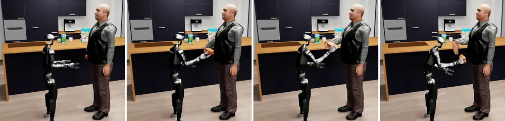
무슨 문제인가
cooperative self-play는 사람 데이터 없이 받는 쪽(receiver)과 주는 쪽(giver)을 함께 학습시켜 매끄러운 handover를 만들 수 있음. 그러나 배포 뒤 만나는 상대는 학습 때의 상대가 아니고, 사람은 로봇이 기대하는 시점이 아니라 자기가 준비된 시점에 건넴. 협력 게임에서는 self-play 쌍이 둘만 아는 약속(convention)에 맞춰져 새 상대에게 실패한다고 알려져 있음. 접촉이 많은 물리적 handover에서도 이런 약속이 생기는지, 생긴다면 무엇이고 어떻게 없애는지는 밝혀지지 않았음.
어떻게 푸나
Isaac Lab 시뮬레이션에서 고정된 Unitree G1(Dex3 손)이 학습된 giver의 손에서 0.5 kg 소포를 받음. receiver는 89차원 상태(관절, 손바닥·소포·상대 손 pose, 촉각 힘 등)를 받아 관절 목표 10개와 손 쥐기 1개를 출력하고, giver는 26차원 관측으로 뻗는 속도, 위치·기울기 보정, 놓기 요청을 출력함. 두 policy는 PPO로 10 iteration씩 번갈아 학습하고, giver는 receiver의 reward를 공유함. 성공은 지지된 전달(supported transfer)로 셈: 로봇이 혼자 소포를 15 step 쥐고, 지지 없는 구간·접촉력 20 N 초과·미끄러짐 3 cm 초과가 없어야 함. 진단 뒤 제안하는 HSD(hidden start-delay randomisation)는 episode마다 0~1초의 지연을 뽑아 그동안 giver의 손을 멈춰 두는 규칙임. receiver의 관측·reward·network는 바꾸지 않으므로 receiver는 상대의 움직임만 보고 언제 건네기가 시작되는지 알아내야 함. 같은 방식으로 상대가 언제 손을 놓는지 정하는 숨은 release 규칙도 추가함.
결과
- 원인 진단: 학습 상대의 위치·기울기 보정을 빼도 성공률은 거의 그대로임. 같은 상대의 출발만 1초 늦추면 성공률이 95.0%에서 6.0%로 내림(두 번째 seed는 87.0%에서 33.5%). 이하 "A / B"는 첫째 seed / 둘째 seed 값임. 반대로 scripted 상대를 0.2초에 바로 출발시키면 30.5%에서 57.5% / 51.0%로 오름.
- 처음 보는 scripted 상대와의 성공률이 HSD로 30.5% / 30.5%에서 80.5% / 80.0%로 오름. 같은 300 update를 HSD 없이 더 학습한 control은 35.0% / 41.0%에 그침.
- 진단·설계에 쓰지 않은 새 scenario seed에서도 유지됨. 학습 지연 범위보다 늦게 출발하는 late 상대에서 23.5% / 11.0%가 77.0% / 55.5%로 오르고, 상대 조건 11개 묶음(held-out bank) 평균은 30.5% / 27.2%에서 78.8% / 62.7%로 오름.
- giver를 고정하고 receiver만 HSD로 더 학습해도 새 seed scripted 상대 평균이 76.6% / 71.9%로, giver도 학습한 경우(80.8% / 69.4%)와 미리 정한 5퍼센트포인트 범위 안에서 같음. 로봇과 상대 손의 20 N 초과 접촉 비율은 10.7% / 7.9%에서 1.9% / 2.5%로 내림.
한계
모든 실험이 시뮬레이션이고, 상대 손은 시뮬레이션 물체이며 이미지 대신 시뮬레이터가 준 pose를 씀. training seed는 2개뿐이고 사람 동작이나 실로봇 평가는 없음. 평가용 scripted 상대의 출발 범위(0.2~1.2초)가 학습 지연 범위와 겹치고, 움직이면 물러나는 settle 상대에는 모든 receiver가 5% 미만임.
누리랩 연구와의 연결
- self-play policy의 실패를 상대 속성 하나씩 바꾸는 paired intervention으로 원인 변수를 찾는 절차는, failure diagnosis를 counterfactual 개입으로 하는 연구의 구체적 사례로 쓸 수 있음.
- 학습 상대에 관측되지 않는 hard constraint를 걸어 다양성을 강제하는 방식은, 사람과 협업하는 manipulation policy의 robustness를 높이는 간단한 baseline이 됨.
11
66점
Deep Bundle Adjustment
3D Vision
relevance 7/10
Computer Vision and Pattern Recognition (cs.CV)
여러 장의 이미지 사이 2D match만 받아 카메라 pose, intrinsics, depth를 반복 갱신하는 GNN으로 bundle adjustment를 학습으로 대신함. 초기 pose 없이 시작해 CO3Dv2 AUC@30°(카메라 쌍 각도 오차 30°까지의 정확도 곡선 면적, 높을수록 좋음)가 78.6으로, 같은 match를 쓴 학습 기반 SfM GASfM의 71.2보다 높음.
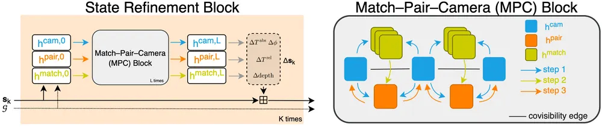
무슨 문제인가
SfM과 SLAM은 대부분 bundle adjustment(BA: 카메라와 3D 점을 reprojection 오차 최소화로 함께 맞추는 비선형 최적화)에 기대는데, BA는 좋은 초기값이 없으면 잘못된 해로 빠짐. COLMAP 같은 incremental SfM은 heuristic으로 초기값을 만들지만 카메라 사이 거리(baseline)가 짧거나 평면이 많은 장면에서 실패함. VGGT 같은 feed-forward 모델은 이미지에서 기하를 바로 뽑아 이 문제를 피하지만, matcher와 solver가 한 거대 모델에 묶여 따로 바꿀 수 없음. match에서 SfM을 배우는 기존 학습 방법(GASfM, RESfM)은 GT intrinsics를 받고 마지막에 classical BA를 다시 돌려야 했음.
어떻게 푸나
DeepBA(Deep Bundle Adjustment)는 외부 matcher가 만든 쌍별 2D match로 view graph(카메라가 node, 50개 이상 match된 카메라 쌍이 edge)를 만듦. 상태는 카메라별 absolute pose, log FOV, 32×32 log-depth map과 쌍별 relative pose(회전과 translation 방향)로 이루어지고, 모든 장면에서 identity pose와 0 값으로 시작함. 매 iteration마다 현재 상태에서 epipolar 오차, reprojection 오차, 3D 일치 오차, pose-graph 불일치 같은 기하 feature를 정해진 수식으로 다시 계산함. 이 feature를 match, 카메라 쌍, 카메라 세 층 사이에 attention으로 주고받는 GNN 블록 4개가 상태 변화량을 예측하고, 이를 상태에 더함. 같은 가중치를 K번(기본 100번) 반복 적용하며, iteration 사이에 hidden state를 넘기지 않음. 학습은 relative pose의 회전과 translation 방향, FOV를 GT로 지도하고, absolute pose는 relative pose와 맞도록만 학습함. 거리 단위를 쓰지 않으므로 단위가 다른 6개 데이터셋을 정규화 없이 섞어 학습함.
결과
- CO3Dv2(물체를 둘러 찍은 영상에서 10장 뽑아 pose 추정) AUC@30°가 78.6임. 같은 eLoFTR(이미지 쌍 사이 점 대응을 찾는 기존 matcher) match를 쓴 GASfM 71.2, COLMAP 77.0보다 높고, VGGT 85.1보다는 낮음. GASfM은 GT intrinsics와 최종 classical BA를 받은 조건임. RealEstate10K AUC@30°는 84.0으로 VGGT 85.3과 비슷함.
- 학습에 없던 DTU, Mip-NeRF 360, IMC2021에서는 10° 기준으로 COLMAP에 가깝지만 3° 같은 좁은 기준에서는 뒤짐. ETH3D는 10° 기준에서도 크게 뒤져, RTA@10°(각도 오차 10° 이하인 relative translation 비율)가 49.1로 COLMAP(eLoFTR) 75.5보다 낮음.
- Mip-NeRF 360 bonsai 292장(match 340만 개)에서 matching 뒤 계산 시간이 56초임. 같은 match로 COLMAP은 988초, GLOMAP은 793초가 걸림. 대신 GPU 메모리는 24GB로 COLMAP 0.9GB보다 많이 씀.
- 학습은 카메라 48대 이하 graph로 했지만 311대 장면까지 돌아감. 모델 크기는 2.04M parameter로 GASfM 145.2M, VGGT 약 1.2B보다 작음.
한계
좁은 오차 기준에서는 classical SfM보다 정확도가 낮고, 반복 창문처럼 일관된 오매칭이나 끊긴 view graph에 약함. 평면 장면에서 focal length와 depth를 구분하지 못하고, bonsai에서는 GT에서 출발해도 100 iteration 안에 카메라 pitch가 중앙값 9.4° 기울어지는 drift가 있음. 모델은 pinhole 카메라만 다루고, 코드는 출간 뒤 공개 예정이라고만 적혀 있음.
누리랩 연구와의 연결
- 상태를 명시적 기하(pose, depth, intrinsics)로 두고 같은 update를 반복하므로, 일부 카메라를 고정한 localization이나 iteration 수를 늘리는 test-time 계산 조절에 그대로 쓸 수 있음. 로봇 SLAM, active perception에서 새 view를 넣어 지도를 다시 맞추는 모듈 후보가 됨.
- 7-Scenes(실내 카메라 relocalization benchmark)에서 intrinsics 없이도 PnP(2D-3D 대응으로 pose를 푸는 방법) 계열보다 오차가 낮았음. 이 결과는 calibration 없는 로봇 카메라로 object-centric 3D 표현을 만드는 연구의 pose 초기화 부품으로 이어짐.
12
63점
Objectives as Policies: Vision-Language Model Cost Programs for Contact-Rich Manipulation
Manipulation
relevance 8/10
ICRA·IROS·RA-L 계열 양식 (추정)
Robotics (cs.RO)
VLM이 정해진 cost 목록에서 단계별 cost와 단계 완료 조건을 골라 objective program을 짜고, sampling-based MPC가 이를 따라 접촉이 많은 조작을 수행함. 시뮬레이션 실패 기록을 받아 program을 2회까지 고치면 시뮬레이션 과제 4개 성공률이 90%로, 가장 가까운 baseline CoRAL의 77.5%보다 높음.
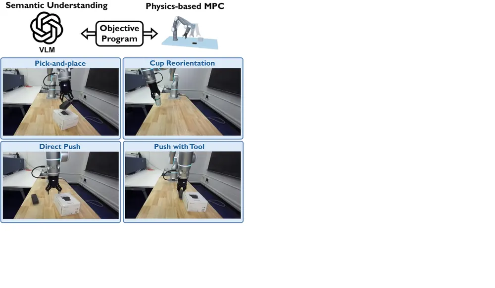
무슨 문제인가
contact-implicit MPC는 접촉 dynamics를 직접 계산하므로 새 물체와 장면에도 다시 계획할 수 있지만, 과제마다 reward와 constraint를 사람이 설계해야 함. OpenVLA 같은 VLA는 언어 지시를 이해하지만 physics model 없이 행동을 바로 예측하고 robot data로 학습해야 함. VLM과 MPC를 잇는 기존 방법도 있으나, ReKep은 잡은 keypoint가 end-effector와 함께 강체로 움직인다고 가정하고 CoRAL은 실행 중 LLM을 1Hz로 계속 불러야 함. 학습 데이터 없이 VLM의 의미 이해와 MPC의 물리 계획을 묶을 과제 표현이 필요함.
어떻게 푸나
OaP(Objectives as Policies)는 먼저 RGB-D 관측에서 SAM 3D, Any6D로 물체 mesh와 자세를 얻어 MuJoCo digital twin을 만들고, 밀도와 마찰 계수는 VLM이 겉모습으로 추정함. VLM은 언어 지시, 장면 이미지, digital twin의 물체 위치, 그리고 cost library를 입력으로 받아 JSON 형식의 objective program을 출력함. cost library는 점 사이 거리, 축 정렬, 영역 안에 들기, 물체 잡고 있기, 도구를 거친 접촉 같은 residual 항 12개로 이루어짐. program은 단계(stage)의 나열이고, 단계마다 running cost, terminal cost, 가중치, 완료 threshold를 가짐. MPPI(sampling-based MPC의 한 종류)는 GPU에서 control 1000개를 병렬 rollout해 현재 단계의 cost를 줄이는 control을 고르고, stage verifier는 terminal 조건이 모두 맞으면 다음 단계로 넘김. VLM은 실행 전에 program을 한 번 스스로 검토(self-review)하고, 시뮬레이션 실행이 실패하면 상태 기록 6개를 받아 program을 고침. 시뮬레이션에서 성공했거나 수정 횟수를 다 쓰면 같은 program을 실로봇에서 실행함.
결과
- 시뮬레이션 과제 4개(집어 옮기기, 컵 기울이기, 상자 직접 밀기, 지우개로 상자 밀기)를 과제당 10회 시도함. self-review를 쓰고 피드백 2회까지 허용하면 성공률이 90%(36/40)이고, 5회까지 허용하면 97.5%임.
- 같은 조건의 baseline 성공률은 CoRAL(저자 재구현) 77.5%, ReKep 42.5%, LLM이 reward 코드를 짜는 L2R(Language to Rewards) 27.5%, π0.5 25%, OpenVLA-OFT 0%임. VLA 두 개는 LIBERO용 공개 checkpoint를 fine-tuning 없이 썼으므로 공정한 비교로 보기 어려움.
- 피드백 없이 첫 실행만 볼 때 cost library를 빼면 성공률이 내림. self-review가 없을 때 50%에서 20%로, 있을 때 65%에서 35%로 내림.
- 실로봇(Flexiv Rizon 4s)에서 과제마다 시뮬레이션 성공 program 5개를 물체 위치를 작게·크게 옮긴 두 장면에서 한 번씩 실행함. 전체 성공률은 80%(32/40)이고 컵 기울이기가 70%로 가장 낮음.
한계
과제는 탁자 위 4개뿐이고 시뮬레이션 평가도 같은 장면 하나에서 반복한 것임. 실로봇 실패는 대부분 grasp 미끄러짐이었고, 저자는 VLM이 추정한 마찰 계수와 강체 가정이 원인이라고 추정함. 단계는 앞으로만 진행하므로 끝난 단계의 완료 조건이 나중에 성립하지 않게 되어도 그 단계로 돌아가지 못함. VLM이 표현할 수 있는 목표는 고정된 cost library 범위로 제한됨.
누리랩 연구와의 연결
- 실패한 시뮬레이션 rollout의 상태 기록을 VLM에 돌려주어 cost를 고치게 하는 구조는 failure diagnosis와 실행 전 test-time optimization 연구의 비교 대상이 됨.
- 끝난 단계로 돌아가지 못한다는 한계는 failure recovery 연구가 들어갈 자리를 바로 보여 줌.
13
62점
ESI: An Embodied Self-Improvement Flywheel for LLM-VLA Agents
VLA
relevance 8/10
ICLR 양식 (추정)
Robotics (cs.RO)
LLM이 계획하고 VLA가 움직이는 agent에서, LLM이 고쳐 준 동작과 그 뒤 VLA가 이어 간 동작을 학습 데이터로 모아 VLA·prompt·skill 목록을 라운드마다 갱신하도록 설계함. RoboDojo 시뮬레이션 과제 10개의 평균 성공률이 같은 조건의 기존 LLM-VLA agent 29.68%에서 49.41%로 오름.
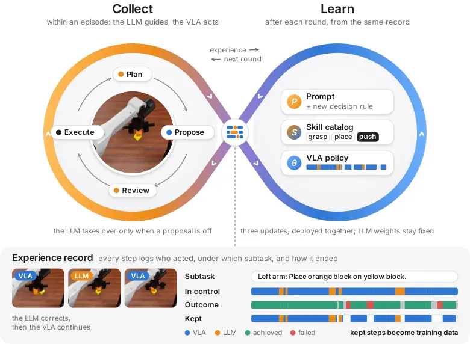
무슨 문제인가
따로 사전학습된 LLM과 VLA를 이어 붙여도 둘이 맞춰 움직이지는 않음. VLA는 익숙한 장면을 보면 LLM이 지정한 subtask를 무시하고 익숙한 동작을 되풀이하기도 함. LLM이 잘못된 접근을 바로잡아 놓아도, 제어가 VLA로 돌아가면 VLA가 고쳐진 상태를 원래대로 되돌려 놓기도 함. LLM이 매번 개입하면 그 episode는 풀리지만 VLA의 능력은 그대로라서 같은 실패가 다음 episode에서 다시 나옴.
어떻게 푸나
ESI(Embodied Self-Improvement)는 LLM 가중치는 고정하고, LLM에 주는 prompt, 둘이 공유하는 skill 목록, VLA 가중치 세 가지를 라운드마다 갱신함. episode 안에서 LLM은 "Left arm: Grasp red block" 같은 구조화된 subtask를 고르고, VLA(π0.5)는 이미지·로봇 상태·과제 문장+subtask를 받아 action chunk를 제안함. LLM은 제안된 궤적을 보고 받아들이거나 직접 고친 동작을 실행함. 모든 step은 누가 제어했는지, 어느 subtask였는지, 국소적으로 성공했는지와 함께 기록됨. 라운드가 끝나면 LLM annotator가 국소 성공 구간만 골라 50 step 학습 window를 만들고, LLM이 고친 구간과 VLA가 이어 간 구간은 한 window로 묶음. episode 전체가 실패해도 성공한 grasp 같은 구간은 학습에 씀. 같은 기록을 보고 LLM이 prompt 수정안을 내고 별도 reviewer가 검토하며, 자주 쓰인 custom 동작은 새 skill 이름으로 등록됨. VLA는 이전 라운드 데이터를 40% 비중으로 섞어 flow-matching loss로 다시 학습됨. 다만 보고된 주 결과는 prompt와 skill 목록을 고정하고 VLA만 3라운드 갱신한 설정임.
결과
- 같은 LLM(GPT-6-Astra)·같은 장면·같은 step 예산의 기존 agent(VLA는 과제 문장만 받음)와 비교함. RoboDojo(시뮬레이션 양팔 조작 benchmark) 과제 10개, 197개 case에서 평균 성공률이 29.68%에서 49.41%로, 평균 Score(과제 중간 단계 달성에 부분 점수를 주는 RoboDojo 점수)가 45.67에서 62.03으로 오름. 펜꽂이 과제만 성공률이 35%에서 5%로 내림.
- 같은 비교에서 episode당 LLM이 직접 실행한 step이 187.97에서 100.28로 46.65% 줄어듦. 둘 다 성공한 41개 case만 보면 79.41에서 29.76으로 62.53% 줄어듦.
- 구성 요소를 하나씩 되돌린 실험(과제당 10 case)에서 VLA를 초기 가중치로 되돌리면 성공률이 52.00%에서 29.00%로, prompt를 되돌리면 41.00%로 내림. skill 목록을 자유 서술로 바꾸면 50.00%로 거의 유지됨.
- RoboDojo leaderboard의 공개 수치와 비교하면 가장 높은 기존 Score는 48.51, 가장 높은 기존 성공률은 38.60%임. 다만 leaderboard 항목마다 평가한 case 집합이 다름.
한계
모든 실험이 시뮬레이션이고 실로봇 결과는 없음. 보고된 결과를 만든 3라운드 학습에서는 prompt와 skill 목록을 고정하고 VLA만 갱신했고, 평가 장면도 학습 데이터 수집에 쓴 suite에서 가져와서 세 요소를 함께 돌리는 flywheel 자체와 일반화는 직접 검증되지 않음. 학습에서 빠진 과제(solve_equation) 전이는 5개 case, 순서 바꾸기 실험은 3개 run뿐이고, 구성 요소 실험은 본 평가와 다른 버전의 실행 코드로 돌렸음.
누리랩 연구와의 연결
- LLM이 실패를 고친 구간과 그 뒤 VLA가 이어 간 구간을 한 학습 window로 묶는 방식은 failure recovery 데이터를 VLA에 되먹이는 구체적 절차임. 실패한 episode에서도 국소 성공 구간을 골라 쓰는 기준은 failure detection 연구의 라벨링 설계에 바로 참고할 수 있음.
- 고수준 planner와 VLA 사이의 subtask 인터페이스를 학습 대상으로 본 사례라서, VLA의 instruction following과 long-horizon skill chaining 연구에서 비교 대상으로 쓸 수 있음.
14
62점
Beyond Prediction Gain: LASR as a Metric for Action-Grounded Latents in World Models
World Model
relevance 7/10
Robotics (cs.RO)
행동 라벨 없이 학습한 latent action이 정말 행동 정보를 담는지를, 현재 state와 행동이 아닌 변수(episode 진행도, episode ID)보다 예측을 더 잘하는지로 재는 지표 LASR을 제안함. ALOHA에서 기존 latent action 모델 5개 중 DiLA가 0.750으로 가장 낮았고(1 미만이면 행동 정보가 있음), UniVLA·MVP-LAM은 1 이상이었음.
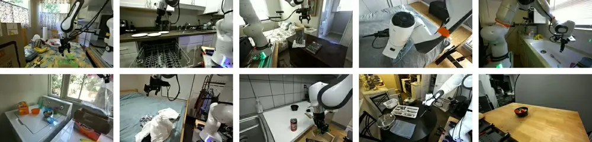
무슨 문제인가
latent action 모델은 행동 라벨이 없는 영상에서 연속 프레임 사이의 행동 비슷한 변수를 추론해 world model과 VLA 학습에 씀. 그런데 latent가 미래 예측을 돕는다고 해서 행동을 담았다고 볼 수는 없음. 현재 state, 과제 단계, episode 진행도, 장면 구분만으로도 다음 움직임이 상당히 예측되기 때문임. 기존 평가(재구성 오차, rollout 품질, action 회귀 정확도, policy 성공률)는 이런 shortcut과 평가 모델의 입력 크기 차이를 가르지 못하고, 논문마다 다른 척도를 써서 서로 비교할 수도 없음.
어떻게 푸나
LASR(Latent Action Support Ratio)은 같은 target을 세 가지 입력으로 예측하는 predictor를 따로 학습해 held-out 오차를 비교함. state route는 현재 state만, latent route는 state와 latent를, control route는 state와 비행동 변수(episode 진행도 또는 episode ID 중 validation에서 고른 것)를 입력으로 받음. target은 기록된 14차원 행동과 한 step의 state 변화량이고, predictor는 모두 같은 affine ridge 회귀임. 점수는 latent route 오차를 두 기준 route 오차 중 작은 값으로 나눈 비율이며, 1보다 작으면 latent가 두 기준을 모두 이긴 것임. target 2개와 episode 단위 fold 5개로 생기는 점수 10개를 기하평균한 값이 GeoLASR, 최댓값이 WorstLASR임. 기록된 실제 행동을 latent 자리에 넣은 경우를 양성 대조로 두어 지표가 행동 정보를 잡는지 먼저 확인함. 추가로 이 비율을 학습 손실로 바꿔 고정된 latent 위에 작은 residual adapter를 학습함.
결과
- 실제 행동을 latent 자리에 넣은 양성 대조는 WorstLASR 0.174로, 두 target과 5개 fold 모두에서 1 아래였음. 지표가 알려진 행동 정보를 잡는다는 확인임.
- ALOHA(저가 양팔 원격조작 로봇) 배터리 조작 시연 49개(2,048개 transition)에서 고정된 latent 모델 5개를 비교함. GeoLASR은 DiLA 0.750, LaWAM 0.891, LAPA 0.922였고 UniVLA 1.009, MVP-LAM 1.095로 기준선 1을 넘음.
- ManiSkill3 과제 5개에서 같은 state에서 행동 4개로 갈라지는 시뮬레이션 평가 세트를 따로 만듦. 25개 모델과 과제 조합에서 GeoLASR이 낮을수록 실행한 말단 장치 변위 오차가 낮았음(Spearman 0.956). 갈래 맞히기 정확도도 DiLA 65.58%, UniVLA 25.44%로 순서가 같았음(우연 수준 25%).
- LASR 손실로 학습한 adapter는 DiLA의 GeoLASR을 0.750에서 0.745로, WorstLASR을 0.796에서 0.785로 낮춤. 원래 latent와의 paired 구간은 0을 포함해 차이가 확실하지 않음.
한계
모든 평가가 offline 데이터와 선형 ridge predictor 위에서 이뤄지고, 실로봇 폐루프 실험은 없음. 부록에서 과제 안 LASR과 policy 성공률의 상관은 유의하지 않았음(ρ=+0.2327, p=0.8992). 결과 위치만 바꾸는 개입에서 DiLA 점수가 0.7442에서 0.9888로 올라, latent가 행동이 아니라 실현된 결과를 따라갈 수 있음을 저자도 인정함. 공개 코드에는 adapter 학습 루프와 fold 배정이 빠져 있다고 적혀 있고, 저장소 주소는 본문에서 확인 불가임.
누리랩 연구와의 연결
- 영상으로 사전학습한 world model이나 VLA의 latent action을 쓸 때, 그 latent가 행동을 담는지 state shortcut만 담는지 먼저 걸러 내는 점검 도구로 쓸 수 있음.
- '결과만 바꾸는 개입' 실험 설계는 world model latent의 counterfactual 민감도를 따질 때 그대로 가져다 쓸 만함.
15
60점
JVT: Just Video Transformer makes pixel-space video diffusion simple
Video
relevance 3/10
ICLR 양식 (추정)
Computer Vision and Pattern Recognition (cs.CV)
pretrained autoencoder 없이 raw pixel 위에서 바로 denoise하는 단순한 DiT형 video diffusion 모델 JVT를 만듦. UCF-101 class 조건 생성의 FVD(낮을수록 좋음)가 136.5로, latent DiT인 Latte의 477.97보다 낮음. RGB와 depth를 같이 생성하면 카메라 이동 추종도 높아짐.
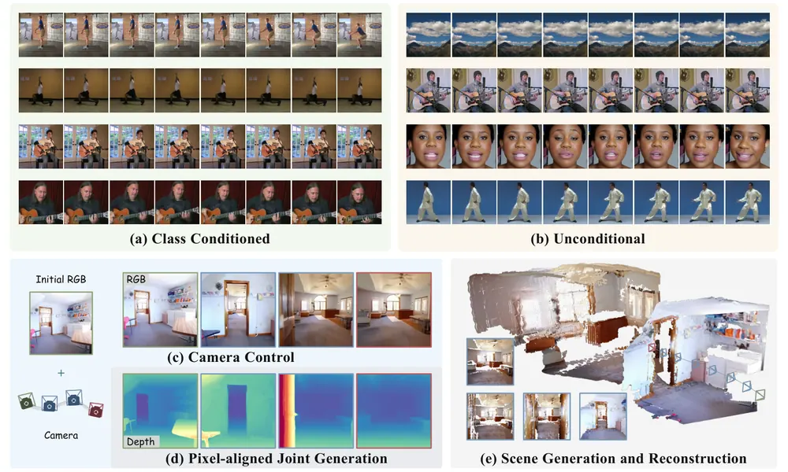
무슨 문제인가
latent diffusion은 별도로 학습한 autoencoder에 묶여 있어 복원 오차와 추가 학습·추론 비용이 생기고, 다른 modality를 같이 생성하기 어려움. 이미지에서는 큰 patch를 쓰는 단순한 pixel-space Transformer(JiT)가 latent 방식과 비슷한 품질을 냄. 그러나 video 생성은 여전히 latent DiT가 주류이고, pixel-space video 모델은 U-Net식 skip connection이나 여러 단계로 나눈 cascaded 생성 같은 특수 구조에 기댐. 그래서 단순한 Transformer 하나로 raw video를 직접 생성할 수 있는지가 확인되지 않은 상태였음.
어떻게 푸나
JVT(Just Video Transformer)는 noise가 섞인 video를 입력받아 깨끗한 video를 바로 예측하고, 이를 rectified-flow velocity loss로 학습함. token 수를 줄이려고 video를 큰 patch로 잘라 16-frame 256×256 video를 visual token 1,024개로 만듦. patch embedding은 frame 안에서 2D conv로 공간 특징을 먼저 뽑고, 위치마다 1D conv로 시간 축을 묶는 patch-first 방식에 채널을 32로 좁혔다 넓히는 bottleneck을 붙임. noise level과 class 조건은 표준 AdaLN으로 넣음. 9번째 block 뒤에 학습 가능한 register token 32개를 붙이고, sampling 때 register를 뺀 예측과의 차이를 키우는 register guidance(RG)를 씀. camera 조건 생성에서는 RGB와 disparity(depth를 변환한 값)를 채널로 이어 붙여 4채널 video로 같이 denoise함. 생성한 disparity를 depth로 되돌려 camera parameter로 역투영하면 색이 입혀진 point cloud가 나옴.
결과
- UCF-101(사람 행동 101종 영상)의 16-frame 256×256 class 조건 생성에서 FVD@2048(생성 영상 2,048개로 잰 분포 거리, 낮을수록 좋음)을 잼. JVT는 136.5, RG를 더하면 129.2이고 latent DiT인 Latte는 477.97임.
- 같은 조건의 register 실험에서 RG는 50-step Euler 기준 함수 호출 수를 100에서 150으로 늘림. 호출 수 200인 50-step Heun은 register 없이 167.4로 더 나쁨.
- RealEstate10K(카메라 궤적이 있는 실내 영상)의 8-frame camera 조건 생성에서 RGB만 생성하던 JVT에 disparity를 더함. 5도 기준 translation 정확도(RTA)가 72.4%에서 79.5%로, 각도 기준별 정확도 곡선 면적(AUC)이 52.8에서 58.6으로 오름. FVD는 27.0에서 27.5로 조금 나빠짐.
- 가장 강한 비교 대상 DFoT는 같은 조건에서 FVD 35.3, 5도 RTA 77.7%, AUC 58.3임. rotation 정확도(RRA)는 모든 방법이 99% 이상이라 차이가 거의 없음.
한계
실험은 256×256의 짧은 clip(16-frame, camera 실험은 8-frame)과 작은 dataset에 한정되고, text-to-video나 큰 규모 학습은 보이지 않음. image-video joint training을 쓴 Latte와 비교하면 FaceForensics(JVT 32.86, Latte 27.08), SkyTimelapse, Taichi-HD에서 JVT의 FVD가 더 높고, RG 이득도 UCF-101에서만 뚜렷함. depth 학습 신호는 기존 3D 재구성 모델 Pi3X가 만든 pseudo-label에 기대므로 재구성 모델이 필요 없는 것은 추론 단계뿐이고, 코드 공개 여부는 본문에서 확인 불가.
누리랩 연구와의 연결
- camera 궤적을 조건으로 RGB와 depth를 같은 pixel grid에서 같이 생성해 point cloud까지 얻는 구조는, action 조건 video world model이 3D 기하를 함께 내놓도록 바꾸는 설계로 옮겨 볼 수 있음. depth를 같이 생성했을 때 카메라 이동 추종이 좋아진 결과는 action 추종 정확도를 높이는 방법의 후보임.
- 로봇·조작 실험은 없어 manipulation이나 VLA와의 직접 연결은 약함.
오늘의 흐름
- VLA 실패를 학습 데이터로 바꾸기: 실패 rollout을 진단하고, 실패 지점부터 과제를 끝내는 시연을 다른 agent가 만들어 VLA를 다시 학습시키는 연구가 둘 나옴. Agentic-Teacher는 coding agent가 수리 시연을 짜고, ESI(Embodied Self-Improvement)는 LLM이 고친 구간과 그 뒤 VLA 동작을 함께 학습 window로 묶음.
- world model을 policy 대신 cost와 학습 신호로 쓰기: world model의 dynamics는 고정하고, 그 위의 계획 cost나 생성 모델의 학습 신호를 고치는 연구가 모임. WATO(World Action Trajectory Optimization)는 trajectory optimization 결과를 미분해 생성 모델을 학습하고, latent goal cost는 goal 거리만 adapter로 다시 매김.
- 표현이 정말 행동과 움직임을 담는지 재기: latent나 encoder가 행동·움직임 정보를 정말 담는지 재는 지표와, 그 정보를 언어 모델이 쓰게 하는 학습법이 나옴. LASR(Latent Action Support Ratio)은 latent action이 episode 진행도처럼 행동이 아닌 변수보다 행동을 더 잘 예측하는지 잼. V-JEPA-LM은 영상을 뒤집거나 속도를 바꾼 짝 질문으로 언어 모델이 움직임 정보를 쓰게 함.
- policy 실패를 입력 변수 하나로 설명하고 다루기: 실패를 일으키는 입력 변수 하나를 찾거나 예측하고, 그 변수만 다뤄 고치는 연구가 나옴. self-play handover는 개입 실험으로 상대의 시작 시점을 원인으로 찾음. proprioceptive anchor는 policy가 물체 위치 값을 덜 믿는 정도를 식으로 예측함. PROOF는 카메라가 망가지면 proprioception만으로 걷는 fallback을 학습함.
- reasoning model을 직접 robot policy로 학습: RURL(robot-use reinforcement learning)은 demonstration 없이 시뮬레이션 RL만으로 reasoning model이 end-effector pose를 내게 함. 실제 dual-arm 로봇에서 30회 중 18회 성공함.
해볼 만한 연구
world model 예측 불일치로 VLA 실패 시점 찾기
- 질문: 행동과 미래 상태를 함께 생성하는 모델의 예측과 고정된 world model의 rollout이 어긋나는 정도가 VLA 실패 시점을 미리 알려 주는지 밝힘.
- 첫 실험: LIBERO-10(시뮬레이션 장기 조작 과제 10개 모음)에서 π0 rollout마다 두 예측의 latent 거리를 매 step 기록함. 이 값의 실패 예측 AUROC를 action entropy 기반 점수와 비교함.
- 가장 가까운 연구: WATO는 생성한 궤적을 trajectory optimization의 기준점으로만 씀. 두 예측의 차이를 실패 판정 신호로는 쓰지 않음.
실패 원인 변수를 찾은 뒤 수리 시연을 만드는 데이터 엔진
- 질문: 실패 rollout에서 원인 변수(물체 위치 오차, 접촉 시점 등)를 개입 실험으로 먼저 찾으면, 같은 양의 수리 시연으로 얻는 성공률 향상이 커지는지 밝힘.
- 첫 실험: LIBERO-10의 같은 실패 집합에 대해 원인 변수별로 묶은 수리 시연과 failure mode별로 묶은 수리 시연을 같은 양으로 만듦. 두 경우의 post-training 성공률을 비교함.
- 가장 가까운 연구: Agentic-Teacher는 실패를 겉보기 유형(집기, 놓기 등)으로 묶음. Agentic-Teacher는 self-play handover처럼 변수별 개입 진단을 쓰지 않음.
VLA latent action의 행동 정보 점검
- 질문: 영상으로 사전학습한 VLA의 latent action이 state shortcut 대신 행동을 담을수록 실로봇 fine-tuning 성능이 좋아지는지 밝힘.
- 첫 실험: latent action 모델 여러 개의 LASR 점수를 재고, 같은 demonstration 양으로 fine-tuning한 실로봇 조작 성공률과의 순위 상관을 봄.
- 가장 가까운 연구: LASR은 offline 데이터로만 평가함. 부록에서 같은 과제 안의 policy 성공률과의 상관은 유의하지 않았고, 실로봇 성공률과 비교한 실험은 없음.
꼭 읽을 논문
- Training Reasoning Models in Simulation to Natively Use Real Robots: demonstration 없이 시뮬레이션 RL만으로 reasoning model을 실로봇 policy로 만듦. VLA 학습 방식의 비교 대상이 됨.
- Agentic-Teacher: VLA 실패 진단과 수리 시연 생성을 한 흐름으로 묶어 failure recovery 데이터 연구에 바로 쓸 수 있음.
- Joint World Action Models through Differentiable Trajectory Optimization: trajectory optimization 결과를 미분해 world action model의 학습 신호로 쓰는 설계를 보여 줌.
- V-JEPA-LM: world model encoder의 움직임 정보가 언어 판단까지 전달되지 않는 문제를 재고 고치는 방법임.